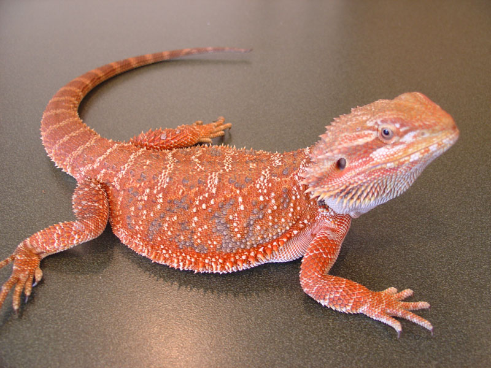

Bearded dragon
Pogona

Biawak
Varanus

Ini adalah sejenis kadal-kadalan yang termasuk dalam famili Chamaeleonidae. Banyak orang yang salah sangka bahwa Chameleon dan Bunglon itu sama, ternyata mereka berbeda, apakah yang membedakan mereka berdua? dari postur tubuh jelas berbeda, Bunglon langsing dan berjalan cepat, sedangkan Chameleon gemuk dan gerakannya lambat. Perubahan warna(mimikri) pada mereka juga berbeda, Bunglon akan merubah warnanya sesuai dengan emosi mereka, sedangkan Chameleon akan merubah warnanya sesuai tempatnya. Chameleon banyak dipelihara orang, melainkan karena warna mereka menarik perawatannya pun cukup mudah, hanya memberi makan, membersihkan kandang, dan menyesuaikan suhu kandang.
Nama kerennya adalah Kadal Water Monitor. Jenis reptil yang memiliki nama latin Varanus Salvator ini juga termasuk salah satu jenis reptil yang kerap dipelihara, dan sering ditemukan di lingkungan sekitar. Meski termasuk jenis biawak yang aman dan biasa dipelihara, binatang ini tetap membutuhkan pengawasan karena di alam liar ia termasuk salah satu jenis binatang pemangsa. Bahkan di lingkungan sekitar rumah, biawak sering dianggap sebagai musuh bebuyutan para peternak ayam, karena ia sering memangsa ayam-ayam yang berkeliaran di sekitarnya.
Jenis kadal yang bisa dipelihara untuk pemula yang keempat adalah Bearded Dragon, kadal ini sedikit lebih panjang dibanding yang pertama, kedua dan ketiga. Panjangnya berkisar 35 cm hingga 60 cm. Meski begitu, kadal Bearded Dragon ini jinak kok, mudah dalam perawatan. Hanya saja sedikit membutuhkan tempat yang lebih besar. Kadal ini bersifat omnivora, jadi selain serangga juga bisa sahabat kasih pakan sayuran.

Kadal ini berasal dari Afrika kadal ini juga terkadang disebut Bosc Monitor. Ukuran tubuh kadal Savannah Monitor ini cukup pendek, hampir menyerupai biawak, namun cukup besar untuk digolongkan dalam kategori kadal. Savannah Monitor bisa tumbuh dengan panjang tubuh mencapai 1 meter, dan bertahan hidup sekitar 11 tahun lamanya. Jenis kadal yang satu ini kurang suka berbaur dan berkelompok, ia lebih suka menyendiri. Makanan utamanya adalah serangga dan tikus.

Soa Payung atau dalam bahasa latinnya lebih dikenal dengan nama Chlamydosaurus kingii adalah binatang reptil yang memiliki teknik pertahanan diri yang unik untuk menghindar dari ancaman pemangsanya dialam liar. Sesuai dengan keunikan yang dimilikinya, Spesies kadal yang satu-satunya anggota dari genus Chlamydosaurus ini berasal dari Autralia bagian utara selain itu juga ditemukan juga terdapat di selatan Papua New Guinea. Jenis reptil yang memiliki penampilan garang ini juga lebih dikenal dengan nama Frilled Dragon atau ada juga yang menyebutnya dengan nama Frilled Lizard. Pemberian nama berdasarkan jumbai yang ada pada lehernya, jumbai ini biasanya digunakannya untuk mempertahankan diri atau menakut-nakuti hewan lain yang dianggapnya sebagai ancaman dengan cara mengembangkan jumbai melingkar sehingga membuat tubuhnya seolah-olah terlihat lebih besar. ( breeding )